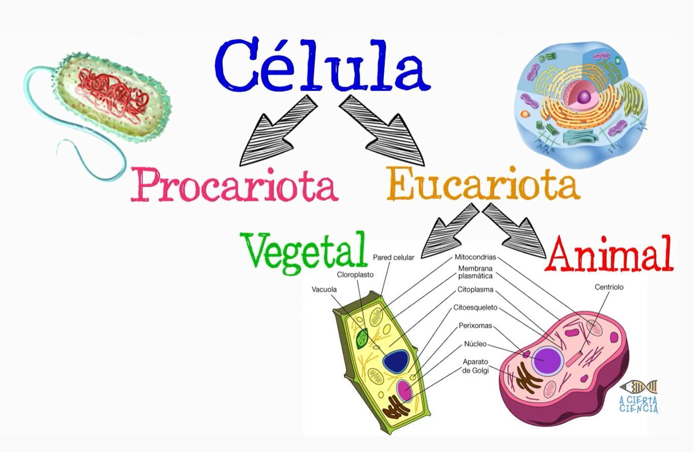

FA_UD1_Identificación de especies vegetales
FUNDAMENTOS AGRONÓMICOS
UD 1
IDENTIFICACIÓN DE LAS ESPECIES VEGETALES
LA CÉLULA VEGETAL
Definición
Es la porción más pequeña de los seres vivos dotada de vida propia: nace, crece y se reproduce.
-
Los seres vivos de una sola célula: unicelulares: bacterias
-
Los seres vivos que tienen más de una célula se llaman pluricelulares: cada célula que lo integra tiene vida propia, pero la actividad de cada una de ellas se coordina con las demás, y así se forma un organismo de una categoría superior a la de aquellos otros constituidos por una sola célula. P.ej. Elefante, pino..
La mayoría de las células tienen un tamaño pequeñísimo y para observarlas se hace al microscopio.
Existen dos tipos de organización celular:
-
Células Procariotas: Carecen de núcleo claramente diferenciado y orgánulos internos. El material genético está formado por un ADN simple. A este grupo de células pertenecen las bacterias.
-
Células Eucariotas: Son mucho mayores y mucho más complejas que las procariotas. Tienen núcleo y el material genético se encuentra en forma de cromosomas. También tienen varios orgánulos y varios compartimientos.
Las células eucariotas pueden ser animales o vegetales. La célula vegetal, aunque es similar a la célula animal, se caracteriza por presentar algunas estructuras ausentes en las células animales tales como la pared celular, las vacuolas y los cloroplastos.
Vídeo sobre las células procariotas y Eucariotas
{width=50%}
La célula vegetal, aunque es similar a la célula animal, se caracteriza por presentar algunas estructuras ausentes en las células animales tales como la pared celular, las vacuolas y los cloroplastos.
-
Pared celular: Es una capa o estructura rígida cuya función es proteger a la membrana plasmática y dar rigidez y forma a la célula.
-
Cloroplastos: Son orgánulos característicos de la célula vegetal pues en ellos tiene lugar el proceso de la fotosíntesis.
-
Vacuola: Son orgánulos que pueden ocupar hasta el 90% de toda la célula, tienen función de almacenamiento, puede almacenar agua, sales minerales y otros nutrientes.